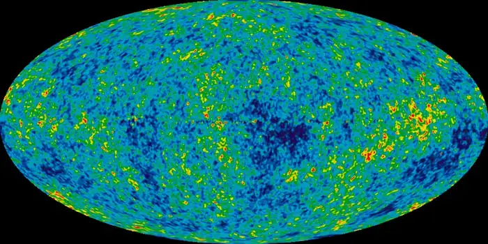
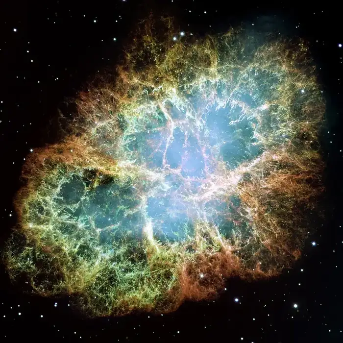
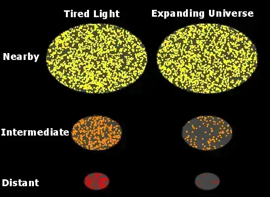

The claim
In 1929 Fritz Zwicky proposed that cosmological redshift might be a loss of energy by photons travelling through space — 'tired light' — rather than a Doppler or expansion effect. The appeal was that it avoided an expanding universe, and later that it avoided a beginning.
Maps, diagrams and images






For decades it was a minority but respectable position. It is now excluded, not by one observation but by three independent ones.
The three tests
First, time dilation. If redshift comes from expansion, distant events should appear slowed by a factor of (1+z) — supernova light curves should stretch. They do, measured to high precision. A photon losing energy in transit would not slow the events that emitted it.
Second, the cosmic microwave background. Tired light cannot produce a blackbody spectrum at 2.7 K with the measured distortions; expansion can, and does.
Third, surface brightness and angular size. In an expanding universe, surface brightness falls with redshift in a specific way; in a static tired-light universe it falls differently. The measurements match expansion.
Documented: supernova light curves are time-dilated by (1+z), as expansion predicts.
Documented: the CMB is a near-perfect blackbody, which tired light does not produce.
Documented: surface-brightness and angular-size tests favour expansion.
Not established: any tired-light mechanism that reproduces all three.
Why it is still argued: because it removes the Big Bang, which is a conclusion some people want removed. The measurements do not care.
Why it is in the archive
Because it is the archive's best example of a rival theory that was taken seriously and then killed by data — not by ridicule, not by consensus, but by three measurements that could have gone the other way.
Open resources on this topic
- BookCurvature pressure in a cosmology with a tired-light redshift — David F. Crawford · 1999 (Internet Archive, free to read)
- PapersOpen-access articles: DOAJ · PubMed Central · Internet Archive Scholar
- BooksPublic-domain and borrowable copies: Open Library · Project Gutenberg · Google Books
More images
Cite this page
Momin, S. (2026). Tired Light. The Larger World Archive. https://drsamonline.github.io/LARGE_GLOBE/tired-light.htmlMomin, Sohil. “Tired Light.” The Larger World Archive, 2026, https://drsamonline.github.io/LARGE_GLOBE/tired-light.html.Momin, Sohil. “Tired Light.” The Larger World Archive, 2026. https://drsamonline.github.io/LARGE_GLOBE/tired-light.html.@misc{tired2026tired,
author = {Momin, Sohil},
title = {Tired Light},
year = {2026},
howpublished = {The Larger World Archive},
url = {https://drsamonline.github.io/LARGE_GLOBE/tired-light.html},
note = {Last reviewed 20 November 2026}
}Last reviewed 20 November 2026 · Corrections policy · this page is not peer reviewed
Sources for this page
- Wikipedia, “Tired light” — the hypothesis and the tests that exclude iten.wikipedia.org
- Wikipedia, “Redshift” — what the measurements showen.wikipedia.org
- Wikipedia, “Cosmic microwave background” — the blackbody the hypothesis cannot makeen.wikipedia.org
- Wikipedia, “Time dilation” — the test that settled iten.wikipedia.org